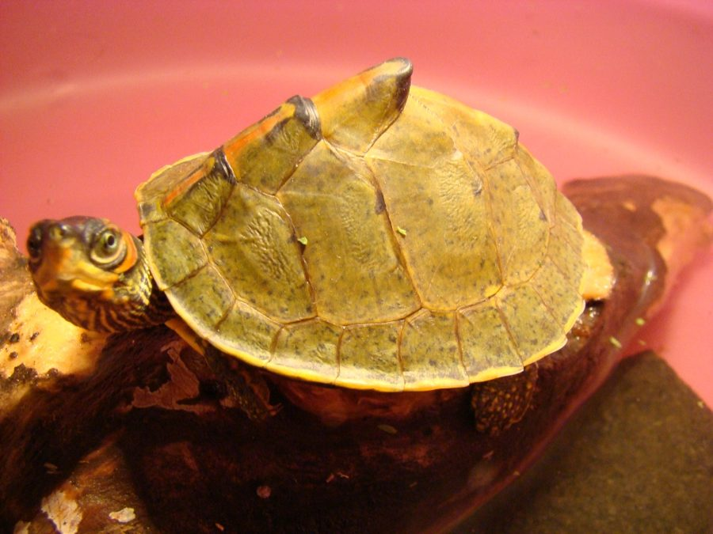

पचेराIndian Roofed Turtle
Pangshura tecta · Geoemydidae · REP-0021

- Scientific nameवैज्ञानिक नाम
- Pangshura tecta (Gray, 1831)
- Familyकुल
- Geoemydidae
- Hindiहिंदी
- पचेरा
- Local namesस्थानीय नाम
- pachera, pachhera, chapant, kachhua, roofed turtle
- Status hereयहाँ की स्थिति
- native
- Movementआवागमन
- Resident, here all year
- IUCNIUCN
- VU
- Reviewसमीक्षा
- audited and independently read
When to look कब देखें
Present all year.साल भर मौजूद।
Uses and possibilities उपयोग और संभावनाएँ
Drawn from the documented uses in the profile below, where each is labelled traditional, current or a research lead. All uses →
Tell it apart from इनसे अलग पहचानें
पचेरा / Indian Roofed Turtle
Pangshura tecta (Gray, 1831) — Geoemydidae
पचेरा (इंडियन रूफ़्ड टर्टल) — नदियों और बड़े तालाबों में रहने वाला एक कछुआ। इसके खोल की छत जैसी आकृति इसे "roofed" या "पचेरा" (ढाँचेदार) नाम दिलवाई है। काली या भूरी पीठ, पीले पंजे, और पानी में तेज़। भारतीय वन्यजीव संरक्षण अधिनियम 1972 की अनुसूची II में सूचीबद्ध और सुरक्षित। नदियों और बड़े तालाबों में यह छोटा कछुआ पानी पर तैरता है, किनारों पर धूप सेंकने के लिए बैठता है। पानी के पौधे, छोटी मछलियाँ और कीड़े खाता है।
Quick Identification त्वरित पहचान
| Feature | Description |
|---|---|
| Shell | Brownish-black carapace, smooth, with a distinctive peaked roof-like ridge down the centre |
| Size | Carapace length 20–30 cm; moderately small to medium |
| Head | Olive-brown; two yellowish stripes from eye to ear region |
| Limbs | Olive-brown with yellow streaks or bands; webbed feet adapted for swimming |
| Plastron | Yellowish or cream with dark markings |
| Behaviour | Aquatic; often seen basking on banks; alert and swift in water |
Field tip: Look on the banks of rivers and large tanks, especially on warm mornings. A small dark turtle with a peaked carapace, yellow head markings, and yellow-streaked limbs basking on a stone or log. Entirely aquatic and swims away quickly when approached.
Morphology आकारिकी
Biometrics (typical measurements from northern Indian populations):
| Measurement | Range |
|---|---|
| Carapace length | 20–30 cm |
| Plastron length | 18–27 cm |
| Weight | 0.5–1.2 kg |
Carapace: Smooth, brownish-black, with a distinctive peaked or roof-like keel running down the centre, giving the species its common name. The vertebral scutes (the central row of plates) are enlarged and form the characteristic ridge.
Plastron: Yellowish to cream with dark brown markings or blotches, particularly around the seams (sutures).
Head: Olive-brown with a characteristic pair of yellowish stripes running from the posterior corner of the eye to the ear region (tympanum), giving the head a distinctive marked appearance.
Limbs: Olive-brown with yellow streaks and bands; all four limbs are webbed, showing adaptation to an entirely aquatic life. The hind limbs are particularly well webbed.
Sexual dimorphism: Females are larger than males; males have longer tails and a concave plastron.
हिंदी: काली-भूरी पीठ, छत जैसी बनावट। सिर पर पीली धारियाँ, पैरों पर पीली पट्टियाँ। जाली वाले पैर, तैराकी के लिए।
Behaviour & Ecology व्यवहार और पारिस्थितिकी
An entirely aquatic turtle, rarely leaving the water except to lay eggs. It spends its days swimming, foraging, and basking. On warm mornings, it hauls out onto banks, logs, or floating vegetation to warm itself (thermoregulation).
It is omnivorous, feeding on aquatic plants, small fish, tadpoles, aquatic insect larvae, and carrion. In areas with human activity, it readily scavenges waste thrown into water bodies.
It is a social species; multiple individuals can be seen basking together. When alarmed, it slides back into the water with remarkable speed. Underwater, it propels itself with its webbed hind limbs.
It hibernates (or estivates) during the dry season, burying itself in mud. Breeding occurs in the monsoon and post-monsoon, with females traveling inland to find suitable nesting sites.
हिंदी: पानी में पूरी ज़िंदगी। पौधे, छोटी मछलियाँ, कीड़े खाता है। सुबह किनारे पर धूप सेंकता है। तेज़ तैराक।
Life Cycle / Phenology जीवन चक्र
| Season | Event |
|---|---|
| June–September | Breeding season; males compete for females |
| August–October | Females nest on river banks, laying 6–10 elongated eggs |
| 60–90 days | Incubation period |
| November–March | Hatchlings emerge at the start of the dry season; vulnerable period |
| Maturity | Reached within 5–8 years |
| Lifespan | 20+ years in the wild |
Host Plants or Prey आहार
- Aquatic plants and filamentous algae
- Small fish and fish fry
- Tadpoles and frog eggs
- Aquatic insect larvae (dragonfly nymphs, damselfly larvae)
- Snails and small crustaceans
- Carrion and plant debris
Predators / Natural Enemies शत्रु
- Eggs and hatchlings: Monitor lizards, House Crow, adjutant stork, feral dogs
- Adults: Large fish, monitor lizards, gharial and mugger crocodiles (where they coexist), otters, wild boar
- Humans: Exploitation for food, collection for the pet trade, habitat destruction
Agricultural / Human Relevance कृषि प्रासंगिकता
Conservation status. The Indian Roofed Turtle is protected under Schedule II of the Wildlife (Protection) Act, 1972, India. It is classified as Vulnerable by the IUCN Red List due to habitat loss, illegal collection for the pet trade, and incidental capture in fishing nets.
Habitat loss. Dams, barrages, pollution, and wetland drainage have fragmented populations and reduced suitable breeding habitat.
Illegal trade. The species is collected for the international pet trade, despite legal protection.
Local use. In some areas, eggs are traditionally collected for food; this practice is now illegal but persists in some regions.
Today. The species benefits from wetland conservation efforts and anti-poaching patrols in protected areas. Education on the legal status and conservation importance is ongoing.
Expected Locally स्थानीय रूप से अपेक्षित
Not a field record. Written from published accounts for eastern Uttar Pradesh. No confirmed local sighting yet — if you have seen it, that is what the atlas needs.
अभी तक स्थानीय पुष्टि नहीं। यह विवरण प्रकाशित स्रोतों से है, किसी अवलोकन से नहीं।
Expected in the Saryu, Rapti, and Ghaghra rivers and in their associated floodplain lakes and wetlands. Suitable habitat exists in irrigation tanks and large ponds connected to river systems. Basking individuals are most visible in the early morning (6–8 AM) and late afternoon (4–6 PM) on river banks.
Distribution वितरण
Global range: The Indian subcontinent: India, Nepal, Bangladesh, and Pakistan.
In India: Widespread across northern plains, central India, and peninsular regions wherever suitable freshwater habitat exists. More common in river systems with seasonal flooding.
In Uttar Pradesh: Occurs in major river systems, particularly the Ganges, Rapti, and Ghaghra.
In Basti district / eastern UP: Expected in the Saryu, Rapti, and Ghaghra river systems and their associated tanks and wetlands.
Research Questions शोध प्रश्न
Anyone can investigate these | कोई भी इन प्रश्नों की जाँच कर सकता है
- How many Indian Roofed Turtles can be seen basking on a given river bank in the early morning during different seasons? / एक नदी के किनारे सुबह कितने पचेरे धूप सेंकते हैं, अलग-अलग मौसम में? — Survey the same stretch weekly for 2 months.
- Where do females nest in the district? — Walk river banks in August–September looking for nesting signs (disturbed sand, eggs).
- What foods are available in a tank and what percentage are taken by turtles? — Sample invertebrate abundance and observe turtle feeding.
- How many are caught and discarded in fishermen's nets each season? — Ask fishermen.
- Can children identify this protected species and understand why it should not be captured? — Test with illustrated cards.
Similar Species मिलती-जुलती प्रजातियाँ
| Species | How to tell apart | हिंदी |
|---|---|---|
| Mauremys caspica (Caspian Turtle) | If present, darker shell, no peaked keel, different head pattern | अगर हो तो: कोई छत न हो |
| Geoclemys hamiltonii (Spotted Pond Turtle) | Highly domed, heavily patterned, less aquatic | ज़्यादा गोल, ज़्यादा दागदार |
| Mugger crocodile hatchlings | Four-legged, but keeled scutes form a row of spikes; much more aggressive | छोटी मगर, स्पाइक्स वाली, बदमाश़ |
Field rule: A small dark turtle with a peaked carapace, yellow head stripes, yellow-streaked limbs, and webbed feet basking on a river bank is an Indian Roofed Turtle and is entirely harmless and protected.
Taxonomy & Classification वर्गीकरण
Original description. Described by John Edward Gray in 1831 in Zoological Miscellany, p. 31, as Testudo tecta. The epithet tecta refers to the roof-like (or tiled) appearance of the carapace.
Subspecies. Monotypic — no subspecies are currently recognised.
Family and order placement. Geoemydidae (Asian water turtles and box turtles), order Testudines, class Reptilia. The genus Pangshura holds several Indian freshwater turtles.
Phylogenetic notes. Recent molecular work confirms Pangshura as a clade within Geoemydidae, distinct from Asian box turtles and closely related to other river turtle genera.
IUCN status rationale. Vulnerable due to habitat loss, wetland drainage, pollution, and illegal collection for the pet trade. Population trends are declining in some areas.
Photo Gallery फोटो गैलरी
Photos needed आवश्यक फोटो
- [ ] Turtle basking on a bank (किनारे पर धूप सेंकता हुआ)
- [ ] Shell detail showing roof-like ridge (छत जैसी बनावट)
- [ ] Head detail showing yellow stripes (सिर पर पीली धारियाँ)
No photos yet — add field photos to media/species/indian_roofed_turtle/ and run node scripts/sync_photos.js.
Atlas Connections संबंधित प्रजातियाँ
- gharial — shares the same river habitats
- Mugger — also a crocodilian of the same rivers
- river fish — potential prey and competitors
- saryu river — primary habitat in the district
References संदर्भ
- Gray, J.E. (1831). Zoological Miscellany, p. 31. London. [original description as Testudo tecta]
- Boulenger, G.A. (1889). Catalogue of the Chelonians, Rhynchocephalians, and Crocodilians in the British Museum (Natural History). British Museum, London.
- Smith, M.A. (1931). The Fauna of British India, including Ceylon and Burma. Reptilia and Amphibia, vol. 1. Taylor and Francis, London.
- Praschag, P. & Fritzsche, F. (2004). Erstnachweise von Pangshura tecta und Morenia ocellata für den Brahmaputra (Assam, Indien). Radiata, 13, 29–31.
- Das, I. (2002). A Photographic Guide to Snakes and Other Reptiles of India. New Holland Publishers, London.
- GBIF Occurrence Data — Pangshura tecta, India (2026).
Source file: species/fauna/reptiles/indian_roofed_turtle.md